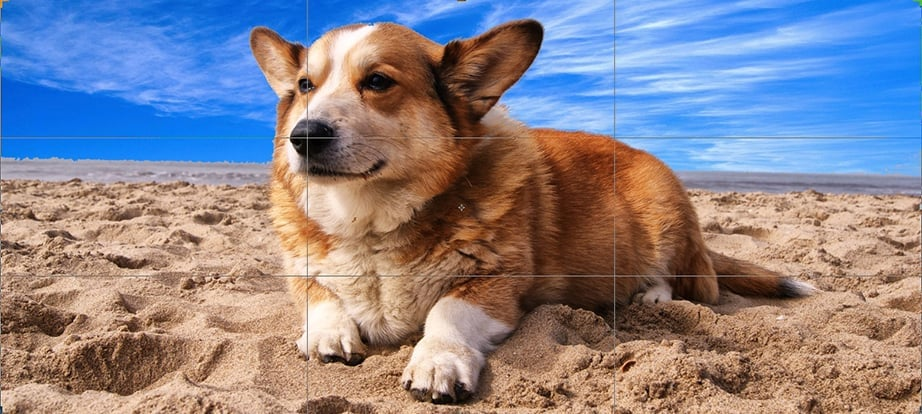
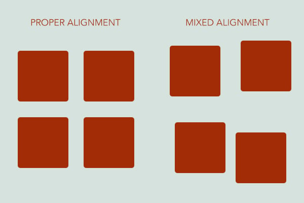

Rule of Thirds
Design Web Kit - Rule of Thirds
In order to create pleasing aesthetics and balance, the Rule of Thirds technique is used. Giving the eyes a focal point to focus on, example being this picture of a Corgi.
When the principle of 'Rule of Thirds' is used, it makes it more pleasing to the eye and makes the website more attractive.
Clean Design
Beautiful Examples of Clean Web Design
25 Beautiful Clean Web Designs

The following layout is using good contrasting colors to make a more appealing Website. An example of clean design.
The page is separated into sections and utilizes the Rule of Thirds while maintaining a uniform design to make a clean and attractive webpage.
Alignment
Alignment Design
Using Alignment to Improve Design
The two images show examples of proper and mixed alignment. Proper alignment allows for more simplicity and user friendliness.
When proper alignment is used, it allows for a more attractive and uniform webpage. Leading to more traffic to your website.